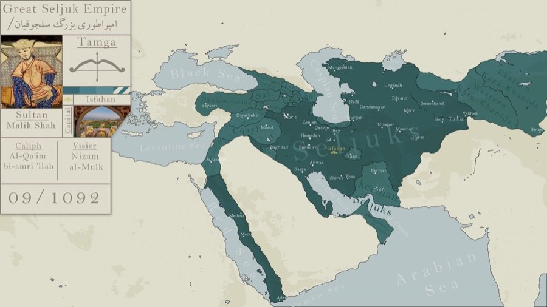

Von den Steppenreichen Zentralasiens bis zum Mogulreich in Indien. Das Osmanische Reich hat eine eigene Seite.
Xiongnu
Zeitraum: 3. Jh. v. Chr. – 2. Jh. n. Chr.
Gebiet: Mongolei und Steppen nördlich von China
Die Xiongnu gründeten das erste große Steppenreich Zentralasiens. Es wurde zum Vorbild für viele spätere türkische und mongolische Nomadenreiche.
Der erste bekannte Herrscher war Touman, der Titel lautete Chanyu. Er wollte einen jüngeren Sohn zum Nachfolger machen. Sein ältester Sohn Modu (türkisch Mete Han) drillte daraufhin seine Reiter mit Pfeifpfeilen: Wohin er schoss, mussten alle schießen. 209 v. Chr. ließ er so seinen Vater töten und regierte bis 174 v. Chr. Unter ihm wurden die Xiongnu zur stärksten Macht der Steppe.
Umstritten: In der türkischen Geschichtsschreibung gelten die Xiongnu als „Großes Hunnenreich“. Ob sie wirklich die Vorfahren der späteren Hunnen sind, ist in der Forschung nicht geklärt. Auch die Gleichsetzung von Mete Han mit dem legendären Stammvater Oğuz Kağan ist eine Deutung, keine gesicherte Tatsache.
Hunnen in Europa noch ungeprüft
Zeitraum: um 375 – 469
Bekanntester Herrscher: Attila (gestorben 453)
Um 375 drangen die Hunnen aus der Steppe nach Osteuropa vor. Das gilt als Auslöser der Völkerwanderung, die schließlich zum Untergang des Weströmischen Reiches beitrug. Unter Attila erreichte ihre Macht den Höhepunkt; nach seinem Tod zerfiel das Reich schnell.
Hephthaliten („Weiße Hunnen“)
Zeitraum: 440er-Jahre – um 560
Gebiet: Zentralasien und das heutige Afghanistan
Die Hephthaliten beherrschten ein großes Gebiet zwischen Persien und Indien. Um 560 verloren sie ihr Reich; kleinere Fürstentümer hielten sich bis ins 8. Jahrhundert. Ein Gründer ist nicht überliefert.
Göktürken
Zeitraum: 552 – 744
Gründer: Bumin Kağan
Die Göktürken waren das erste Volk, das den Namen „Türk“ als politischen Namen für seinen Staat verwendete. Bumin Kağan gründete 552 das Erste Türk-Kaganat. Den Westen verwaltete sein Bruder İstemi (Herrscher 552–575).
Das Reich zerfiel in einen östlichen und einen westlichen Teil. Beide wurden von China unter der Tang-Dynastie unterworfen, der Osten 630, der Westen 657. Von 682 bis 744 bestand ein Zweites Türk-Kaganat; danach übernahmen die Uiguren die Macht.
Nach der Abstammungssage, die in chinesischen Quellen überliefert ist, rettete eine Wölfin, Asena, einen Jungen, den einzigen Überlebenden seines Stammes. Aus ihrer Verbindung gingen zehn Söhne hervor.
Aus dem Zweiten Kaganat stammen die Orchon-Inschriften, frühe Zeugnisse der türkischen Schrift. Eine bekannte Stelle lautet:
„Ihr türkischen und oghusischen Fürsten, hört! Solange oben der Himmel nicht einstürzt und unten die Erde nicht aufreißt – wer könnte euer Land und eure Ordnung zerstören?“
Awaren
Zeitraum: 567 – 822
Erster Khagan: Bayan I. (562–602)
Gebiet: Karpatenbecken, heutiges Ungarn und Umgebung
Die Awaren kamen aus der Steppe nach Mitteleuropa und errichteten unter Bayan I. ab 568 ein Reich im Karpatenbecken. Es reichte zeitweise über Teile der heutigen Länder Ungarn, Österreich, Slowakei, Rumänien und Serbien. Nach Kriegen mit dem Frankenreich verschwand es im frühen 9. Jahrhundert.
Chasaren
Zeitraum: um 650 – um 969
Gebiet: nördlich des Kaukasus, zwischen Schwarzem und Kaspischem Meer
Das Reich der Chasaren war über drei Jahrhunderte eine wichtige Handelsmacht zwischen Europa und Asien. Es endete, als der Kiewer Fürst Swjatoslaw um 969 die Hauptstadt Atil zerstörte. Wer das Reich gegründet hat, ist nicht sicher bekannt.
Uiguren
Zeitraum: 744 – 840
Gründer: Kutluk Bilge Kül Kağan
Die Uiguren übernahmen 744 die Herrschaft der Göktürken in der Mongolei. Ihr Kaganat bestand knapp hundert Jahre. Danach gründeten Uiguren weiter westlich, im heutigen Nordwesten Chinas, neue Staaten, die sich teils bis ins 14. Jahrhundert hielten.
Karachaniden
Zeitraum: 840 – 1212
Erster Khan: Bilge Kül Kadır Han (unsicher)
Gebiet: Zentralasien und Ostturkestan
Die Karachaniden herrschten über Zentralasien und das heutige Ostturkestan. Gründungsdatum und erster Herrscher sind nicht sicher überliefert.
Gaznawiden
Zeitraum: 977 – 1186
Gründer: Sebüktigin
Hauptstadt: Gazna, heute Ghazni in Afghanistan
Die Dynastie ist nach der Stadt Gazna benannt. Alp Tigin war dort ab 962 Statthalter; die eigentliche Dynastie gründete 977 sein früherer Sklave und Schwiegersohn Sebüktigin.
Ihr bekanntester Herrscher war Mahmud von Gazna (971–1030). Er war der erste türkische Herrscher, der den Titel Sultan führte, und unternahm 17 Feldzüge nach Indien.
Großseldschuken
Zeitraum: 1037 – 1194
Erster Sultan: Tughrul (1037–1063)
Namensgeber ist Seldschuk, ein oghusischer Heerführer, der um 1007 oder 1009 starb. Er trat ab 985 mit seinen Leuten zum Islam über. Seine Enkel Tughrul und Tschaghri, Söhne seines Sohnes Mikail, gründeten das Reich.
1040: Sieg über die Gaznawiden bei Dandanakan
1055: Tughrul zieht in Bagdad ein
1071: Alp Arslan, Sohn Tschaghris, besiegt Byzanz bei Manzikert
1072–1092: Malik Schah, Höhepunkt der Macht
1118–1157: Ahmad Sandschar, letzter großer Sultan
In Anatolien entstand ein eigener Zweig, die Rum-Seldschuken. Sie hielten sich bis 1308 und bereiteten den Boden für die Osmanen.

Das Reich 1092, beim Tod Malik Schahs. Karte: YusufEren38, CC BY-SA 4.0
Choresm-Schahs
Zeitraum: um 1077 – 1231
Gründer: Anuschtegin
Gebiet: Choresm, südlich des Aralsees, später bis Iran
Anuschtegin war ein Statthalter der Seldschuken. Ab 1097 trugen seine Nachfahren erblich den Titel Choresm-Schah und machten sich zunehmend selbstständig. Der Mongolensturm unter Dschingis Khan zerstörte das Reich; 1231 endete es.
Goldene Horde
Zeitraum: 1242 – 1502
Gründer: Batu Khan
Gebiet: vom Kaukasus und der Wolga bis nach Zentralasien
Die Goldene Horde ging aus dem Erbteil von Jochi hervor, einem Sohn Dschingis Khans. Sein Sohn Batu baute sie zu einem eigenen Reich aus. Die Führungsschicht war mongolisch, die Mehrheit der Bevölkerung türkischsprachig.
Timuriden
Zeitraum: 1370 – 1507
Gründer: Timur (gestorben 1405)
Hauptstadt: Samarkand
Timur, wegen einer Beinverletzung auch „Timur Lenk“ oder „Aksak Timur“ (der Hinkende) genannt, eroberte ein Reich von Anatolien bis Nordindien. 1402 besiegte er den osmanischen Sultan Bayezid I. bei Ankara. Er starb im Februar 1405 in Farab auf einem Feldzug gegen China. Sein Geburtsjahr ist unsicher; die timuridischen Chroniken nennen 1336.
Mogulreich
Zeitraum: 1526 – 1857
Gründer: Babur
Gebiet: Nordindien, später fast der ganze Subkontinent
Babur, ein Nachfahre Timurs, eroberte 1526 Nordindien. Das Reich bestand über drei Jahrhunderte, bis die Briten es 1857 beendeten. Der letzte Kaiser wurde 1858 verbannt.